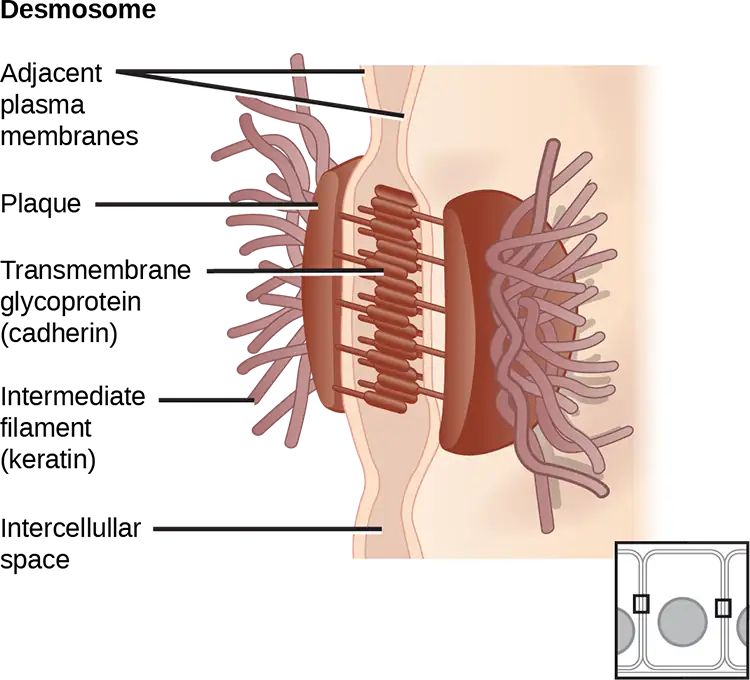
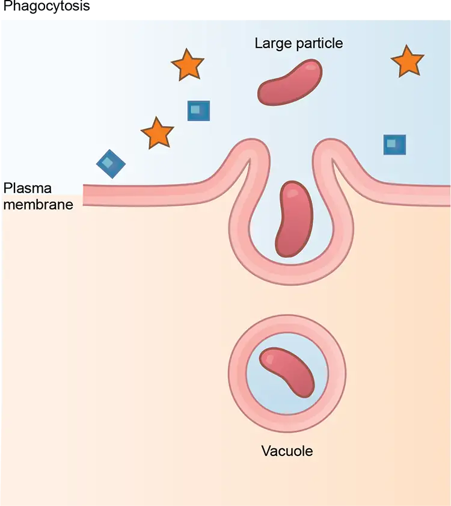
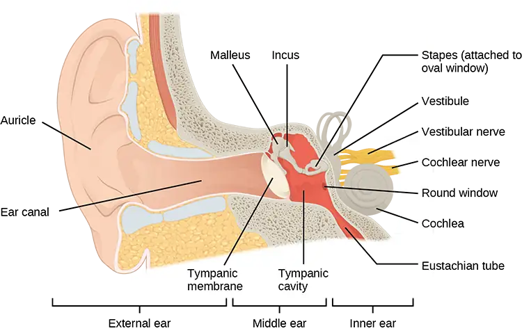

Preface¶
Learning Objectives
Biology is designed for multi-semester biology courses for science majors. It is grounded on an evolutionary basis and includes exciting features that highlight careers in the biological sciences and everyday applications of the concepts at hand. To meet the needs of today’s instructors and students, some content has been strategically condensed while maintaining the overall scope and coverage of traditional texts for this course. Instructors can customize the book, adapting it to the approach that works best in their classroom. Biology also includes an innovative art program that incorporates critical thinking and clicker questions to help students understand—and apply—key concepts.
Welcome to Biology 2e (2nd edition), an OpenStax resource. This textbook was written to increase student access to high-quality learning materials, maintaining highest standards of academic rigor at little to no cost.
About OpenStax¶
OpenStax is a nonprofit based at Rice University, and it’s our mission to improve student access to education. Our first openly licensed college textbook was published in 2012, and our library has since scaled to over 25 books for college and AP® courses used by hundreds of thousands of students. Through our partnerships with philanthropic foundations and our alliance with other educational resource organizations, OpenStax is breaking down the most common barriers to learning and empowering students and instructors to succeed.
About OpenStax resources¶
Customization¶
Biology 2e is licensed under a Creative Commons Attribution 4.0 International (CC BY) license, which means that you can distribute, remix, and build upon the content, as long as you provide attribution to OpenStax and its content contributors.
Because our books are openly licensed, you are free to use the entire book or pick and choose the sections that are most relevant to the needs of your course. Feel free to remix the content by assigning your students certain chapters and sections in your syllabus, in the order that you prefer. You can even provide a direct link in your syllabus to the sections in the web view of your book.
Instructors also have the option of creating a customized version of their OpenStax book. The custom version can be made available to students in low-cost print or digital form through their campus bookstore. Visit the Instructor Resources section of your book page on OpenStax.org for more information.
Errata¶
All OpenStax textbooks undergo a rigorous review process. However, like any professional-grade textbook, errors sometimes occur. Since our books are web based, we can make updates periodically when deemed pedagogically necessary. If you have a correction to suggest, submit it through the link on your book page on OpenStax.org. Subject matter experts review all errata suggestions. OpenStax is committed to remaining transparent about all updates, so you will also find a list of past errata changes on your book page on OpenStax.org.
Format¶
You can access this textbook for free in web view or PDF through OpenStax.org, and for a low cost in print.
About Biology 2e¶
Biology 2e (2nd edition) is designed to cover the scope and sequence requirements of a typical two-semester biology course for science majors. The text provides comprehensive coverage of foundational research and core biology concepts through an evolutionary lens. Biology includes rich features that engage students in scientific inquiry, highlight careers in the biological sciences, and offer everyday applications. The book also includes various types of practice and homework questions that help students understand — and apply — key concepts.
The 2nd edition has been revised to incorporate clearer, more current, and more dynamic explanations, while maintaining the same organization as the first edition. Art and illustrations have been substantially improved, and the textbook features additional assessments and related resources.
Coverage and scope¶
Biology was one of the first textbooks published by OpenStax and has been used by hundreds of faculty and thousands of students since 2012. We mined our adopters’ extensive and helpful feedback to identify the most significant revision needs while maintaining the organization that many instructors had incorporated into their courses. Specific surveys, focus groups, and pre-revision reviews, as well as data from OpenStax users, all aided in planning the revision.
The result is a book that thoroughly treats biology’s foundational concepts while adding current and meaningful coverage in specific areas. Biology 2e retains its manageable scope and contains ample features to draw learners into the discipline.
Structurally, the textbook remains similar to the first edition, with no chapter reorganization and very targeted changes at the section level (mostly in biodiversity).
- Unit 1: The Chemistry of Life. Our opening unit introduces students to the sciences, including the scientific method, bioethics, and the fundamental concepts of chemistry and physics that provide a framework within which learners comprehend biological processes.
- Unit 2: The Cell. Students will gain solid understanding of the structures, functions, and processes of the most basic unit of life: the cell.
- Unit 3: Genetics. Our comprehensive genetics unit takes learners from the earliest experiments that revealed the basis of genetics through the intricacies of DNA to current applications in the emerging studies of biotechnology and genomics.
- Unit 4: Evolutionary Processes. The core concepts of evolution are discussed in this unit with examples illustrating evolutionary processes. Additionally, the evolutionary basis of biology reappears throughout the textbook in general discussion and is reinforced through special call-out features highlighting specific evolution-based topics.
- Unit 5: Biological Diversity. The diversity of life is explored with detailed study of various organisms and discussion of emerging phylogenetic relationships. This unit moves from viruses to living organisms like bacteria, discusses the organisms formerly grouped as protists, and devotes multiple chapters to plant and animal life.
- Unit 6: Plant Structure and Function. Our plant unit thoroughly covers the fundamental knowledge of plant life essential to an introductory biology course.
- Unit 7: Animal Structure and Function. An introduction to the form and function of the animal body is followed by chapters on specific body systems and processes. This unit touches on the biology of all organisms while maintaining an engaging focus on human anatomy and physiology that helps students connect to the topics.
- Unit 8: Ecology. Ecological concepts are broadly covered in this unit, with features highlighting localized, real-world issues of conservation and biodiversity.
Changes to the Second Edition¶
OpenStax only undertakes second editions when significant modifications to the text are necessary. In the case of Biology 2e, user feedback indicated that we needed to focus on a few key areas, which we have done in the following ways:
-
Content revisions for clarity, accuracy, and currency. The revision plan varied by chapter based on need. About twenty chapters were wholly revised with significant updates to conceptual coverage, research-informed data, and clearer language. In about fifteen other chapters, the revisions focused mostly on readability and clearer language with fewer conceptual and factual changes.
-
Additional end-of-chapter questions. The authors added new assessments to nearly every chapter, including both review and critical thinking questions. The additions total over 350 new items.
-
Art and illustrations. Under the guidance of the authors and expert scientific illustrators, especially those well versed in creating accessible art, the OpenStax team made changes to most of the art in Biology. You will find examples in the section below. The revisions fall into the following categories:
- Revisions for accuracy
- Redesigns for greater understanding and impact
- Recoloring art for overall consistency and representation
-
Accessibility improvements. As with all OpenStax books, the first edition of Biology was created with a focus on accessibility. We have emphasized and improved that approach in the second edition.
- To accommodate users of specific assistive technologies, all alternative text was reviewed and revised for comprehensiveness and clarity.
- Many illustrations were revised to improve the color contrast, which is important for some visually impaired students.
- Overall, the OpenStax platform has been continually upgraded to improve accessibility.
A transition guide will be available on OpenStax.org to highlight the specific chapter-level changes to the second edition.
Pedagogical foundation¶
The pedagogical choices, chapter arrangements, and learning objective fulfillment were developed and vetted with the feedback of another one hundred reviewers, who thoroughly read the material and offered detailed critical commentary.
- Evolution Connection features uphold the importance of evolution to all biological study through discussions like “The Evolution of Metabolic Pathways” and “Algae and Evolutionary Paths to Photosynthesis.”
- Scientific Method Connection call-outs walk students through actual or thought experiments that elucidate the steps of the scientific process as applied to the topic. Features include “Determining the Time Spent in Cell Cycle Stages” and “Testing the Hypothesis of Independent Assortment.”
- Career Connection features present information on a variety of careers in the biological sciences, introducing students to the educational requirements and day-to-day work life of a variety of professions, such as microbiologist, ecologist, neurologist, and forensic scientist.
- Everyday Connection features tie biological concepts to emerging issues and discuss science in terms of everyday life. Topics include “Chesapeake Bay” and “Can Snail Venom Be Used as a Pharmacological Pain Killer?”
Art and animations that engage¶
Our art program takes a straightforward approach designed to help students learn the concepts of biology through simple, effective illustrations, photos, and micrographs. Biology 2e also incorporates links to relevant animations and interactive exercises that help bring biology to life for students.
- Visual Connection features call out core figures in each chapter for student study. Questions about key figures, including clicker questions that can be used in the classroom, engage students’ critical thinking and analytical abilities to ensure their genuine understanding.
- Link to Learning features direct students to online interactive exercises and animations to add a fuller context and examples to core content.
Below are a few examples of the revised art for Biology 2e:



Answers to Questions in the Book¶
Students are provided answers to odd-numbered Visual Connection Questions, Review Questions, and Critical Thinking Questions via the Student Solution Manual on the Student Resources page. In order to allow instructors as much flexibility as possible, answers to even-numbered Visual Connection Questions, Review Questions, and Critical Thinking Questions are provided only to instructors via the Instructor Resources page.
Additional resources¶
Student and instructor resources¶
We’ve compiled additional resources for both students and instructors, including Getting Started Guides, an instructor solution guide, and PowerPoint lecture slides. Instructor resources require a verified instructor account, which you can apply for when you log in or create your account on OpenStax.org. Take advantage of these resources to supplement your OpenStax book.
Community Hubs¶
OpenStax partners with the Institute for the Study of Knowledge Management in Education (ISKME) to offer Community Hubs on OER Commons – a platform for instructors to share community-created resources that support OpenStax books, free of charge. Through our Community Hubs, instructors can upload their own materials or download resources to use in their own courses, including additional ancillaries, teaching material, multimedia, and relevant course content. We encourage instructors to join the hubs for the subjects most relevant to your teaching and research as an opportunity both to enrich your courses and to engage with other faculty.
To reach the Community Hubs, visit www.oercommons.org/hubs/OpenStax.
Technology partners¶
As allies in making high-quality learning materials accessible, our technology partners offer optional low-cost tools that are integrated with OpenStax books. To access the technology options for your text, visit your book page on OpenStax.org.
About the authors¶
Second edition authors and reviewers¶
Senior Contributing Authors
Mary Ann Clark, Texas Wesleyan University
Jung Choi, Georgia Institute of Technology
Matthew Douglas, Grand Rapids Community College
Reviewers
Kathleen Berlyn, Baltimore City Community College
Bridgett Brinton, Armstrong State University
Jennifer Chase, Northwest Nazarene University
Amy Hoffman, Grayson County College
Olga Kopp, Utah Valley University
Jennifer Larson, Capital University
Jason Locklin, Austin Community College
Hongmei Ma, American University
Melissa Masse, Tulsa Community College
Shannon McDermott, Central Virginia Community College
Bryan Monesson-Olson, University of Massachusetts Amherst
Amber Reece, California State University Fresno
Monique Reed, Texas A&M University
Jeffrey Roberts, American River College
Matthew Smith, North Dakota State University
Dawn Wankowski, Cardinal Stritch University
First edition authors and reviewers¶
Senior Contributing Authors
Yael Avissar (Cell Biology), Rhode Island College
Jung Choi (Genetics), Georgia Institute of Technology
Jean DeSaix (Evolution), University of North Carolina at Chapel Hill
Vladimir Jurukovski (Animal Physiology), Suffolk County Community College
Robert Wise (Plant Biology), University of Wisconsin, Oshkosh
Connie Rye (General Content Lead), East Mississippi Community College
Contributing Authors and Reviewers
Julie Adams, Aurora University
Summer Allen, Brown University
James Bader, Case Western Reserve University
David Bailey, St. Norbert College
Mark Belk, Brigham Young University
Nancy Boury, Iowa State University
Lisa Bonneau, Metropolitan Community College – Blue River
Graciela Brelles-Marino, California State University Pomona
Mark Browning, Purdue University
Sue Chaplin, University of St. Thomas
George Cline, Jacksonville State University
Deb Cook, Georgia Gwinnett College
Diane Day, Clayton State University
Frank Dirrigl, The University of Texas Pan American
Waneene Dorsey, Grambling State University
Nick Downey, University of Wisconsin La Crosse
Rick Duhrkopf, Baylor University
Kristy Duran, Adams State University
Stan Eisen, Christian Brothers University
Brent Ewers, University of Wyoming
Myriam Feldman, Lake Washington Institute of Technology
Michael Fine, Virginia Commonwealth University
Linda Flora, Delaware County Community College
Thomas Freeland, Walsh University
David Grisé, Texas A & M University – Corpus Christi
Andrea Hazard, SUNY Cortland
Michael Hedrick, University of North Texas
Linda Hensel, Mercer University
Mark Kopeny, University of Virginia
Norman Johnson, University of Massachusetts Amherst
Grace Lasker, Lake Washington Institute of Technology; Walden University
Sandy Latourelle, SUNY Plattsburgh
Theo Light, Shippensburg University
Clark Lindgren, Grinnell College
James Malcolm, University of Redlands
Mark Meade, Jacksonville State University
Richard Merritt, Houston Community College
James Mickle, North Carolina State University
Jasleen Mishra, Houston Community College
Dudley Moon, Albany College of Pharmacy and Health Sciences
Shobhana Natarajan, Brookhaven College
Jonas Okeagu, Fayetteville State University
Diana Oliveras, University of Colorado Boulder
John Peters, College of Charleston
Joel Piperberg, Millersville University
Johanna Porter-Kelley, Winston-Salem State University
Robyn Puffenbarger, Bridgewater College
Dennis Revie, California Lutheran University
Ann Rushing, Baylor University
Sangha Saha, City College of Chicago
Edward Saiff, Ramapo College of New Jersey
Brian Shmaefsky, Lone Star College System
Robert Sizemore, Alcorn State University
Marc Smith, Sinclair Community College
Frederick Spiegel, University of Arkansas
Frederick Sproull, La Roche College
Bob Sullivan, Marist College
Mark Sutherland, Hendrix College
Toure Thompson, Alabama A&M University
Scott Thomson, University of Wisconsin – Parkside
Allison van de Meene, University of Melbourne
Mary White, Southeastern Louisiana University
Steven Wilt, Bellarmine University
James Wise, Hampton University
Renna Wolfe
Virginia Young, Mercer University
Leslie Zeman, University of Washington
Daniel Zurek, Pittsburg State University
Shobhana Natarajan, Alcon Laboratories, Inc.
Adapted from Biology 2e by OpenStax, licensed under CC BY 4.0. Access the original for free at openstax.org. Changes: converted to the web reading format of The Open Book Project.